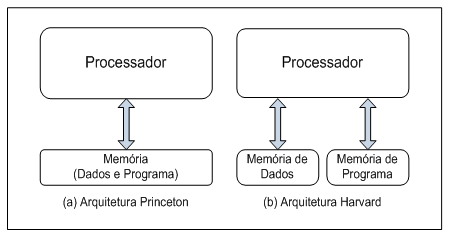

O termo arquitetura de computador refere-se aos atributos que têm impacto direto sobre a execução lógica de um sistema e que são visíveis ao programador como:
Uma instrução indica ao processador uma sequência de micro-operações que deverá ser executada.
Um conjunto de instruções refere-se ao conjunto de todas as instruções reconhecidas por um computador.
De acordo com seu propósito e formato, as instruções podem ser classificadas como:
Em um processador existem diversos registradores, sendo que alguns destes devem ser de conhecimento do programador, denominados de registradores especiais.
Entre os registradores especiais normalmente encontrados em arquiteturas de computadores estão:
O mecanismo de interrupção presente nos processadores possui três funções principais:
As portas de Entrada/Saída (E/S) são os meios físicos que permitem as atividades de troca de informação entre o processador e o meio externo.
Através das portas de E/S o processador pode trocar informações com o usuário ou se comunicar com outros dispositivos como, por exemplo, dispositivos de armazenamento.
O termo organização de computadores refere-se aos atributos que não são visíveis ao programador, ou seja, trata de como o processador é implementado e aborda blocos básicos como:
O caminho de dados é composto pelo hardware necessário para a execução de uma instrução, normalmente formado pela unidade de execução e pelo banco de registradores.
A unidade de execução é composta por uma ou mais ULAs e registradores de uso geral e específicos, interligados por um barramento.
Ao ser executada na unidade de execução, uma instrução segue um ciclo chamado de ciclo de instrução.
A unidade de controle é responsável por gerenciar o fluxo interno de dados, a memória e a comunicação com os dispositivos de entrada e saída.
Para isto, são gerados por esta unidade sinais de controle. Cada sinal de controle comanda uma microoperação como, por exemplo, uma ativação da memória ou a seleção de uma operação pela ULA, conforme a instrução atual.
O sistema de memória serve como um local para o armazenamento de dados e programa.
A memória é dividida em “palavras”, que podem ser identificadas por um endereço único.
Existem dois tipos básicos de memória:
A memória de dados e a memória de instruções podem estar juntas em um mesmo espaço de endereçamento ou separadas.
Quando as memórias utilizam o mesmo espaço de endereçamento, a arquitetura é referenciada como arquitetura de Princeton (ou de Von Neumann).
Quando a memória de dados utiliza um espaço diferente da memória de instrução é referenciada como arquitetura de Harvard.
A arquitetura de Princeton pode resultar em hardware mais simples, enquanto a arquitetura de Harvard pode resultar em um desempenho melhor, pois permite o acesso simultâneo nas duas memórias.
